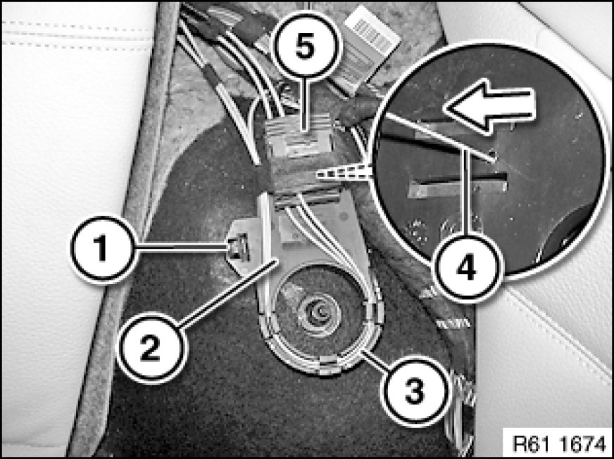
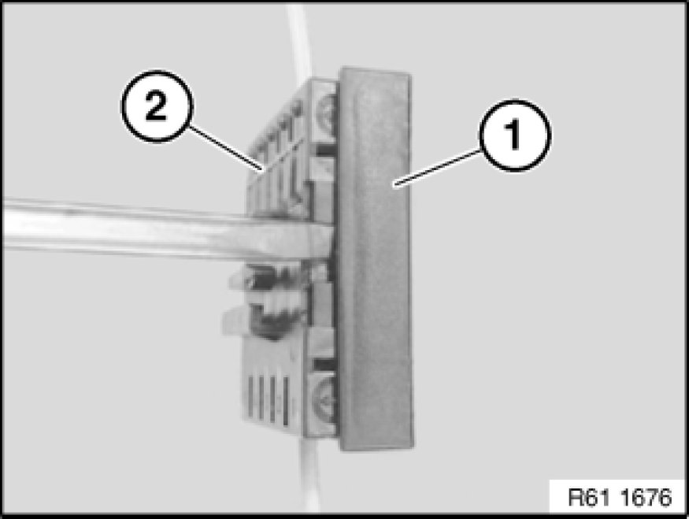
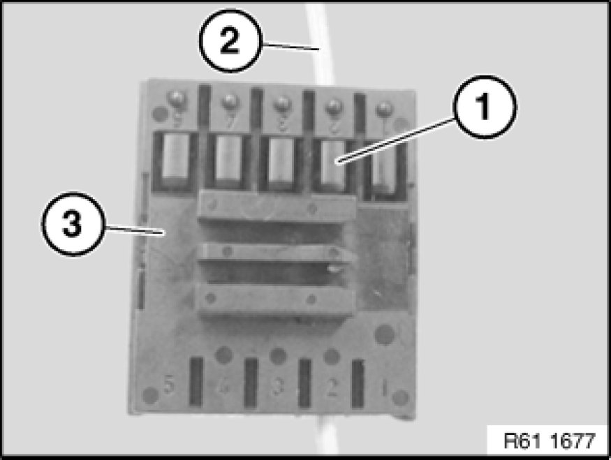

61 13 ... Removing and Installing/Replacing Fibre-Optic Cable Connector
61 13 ... - Removing and installing/replacing fibre-optic cable connector

Important!
Comply with notes and instructions on handling optical waveguides 61 00 ... Notes on Handling Optical Fibers.

Necessary preliminary tasks:
- Remove side section on rear seat backrest Removing and Installing/Replacing Rest Side Section on Left or Right Rear Seat Backrest on left

Unlock catch (1) and remove deflection roller (2).
Remove fibre optic cable (3) from deflection roller (2).
Unlock catch on fibre-optic cable connector (5) with a suitable tool (4).
Remove fibre-optic cable connector (5) in direction of arrow from deflection roller (2).

Carefully raise cover cap (1) with a suitable tool and remove from fibre-optic cable connector (2).

Carefully raise lock (1) and pull fibre optic cable (2) out of fibre optic cable plug (3).
Installation Note:
Make sure fibre-optic cable (2) is correctly seated and engaged in fibre-optic cable connector (3).